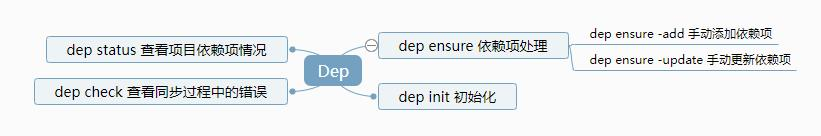

【Go】版本控制-dep介绍与应用
【Go】版本控制-dep介绍与应用
[TOC]
介绍
Go Dep工具是官方实践也是推荐的一款Go语言工程依赖管理工具。用法跟govendor相似。原理都是把原来go get默认放到GOPATH下面的依赖全都放到工程目录下的vendor文件夹进行统一管理。Go build工具从1.5版本开始就支持了到vendor目录查找依赖项的功能。
开启vendor目录功能。在Go1.5版本,编译时设置环境变量GO15VENDOREXPERIMENT=1。在Go1.5以后的版本都默认支持该功能。
Go dep的设计上能看出，作者在尽可能的让依赖管理这项工作更加自动化更加节省工作。比如dep init，一键完成初始化+依赖项整理工作；dep ensure，一键完成依赖项增加、更新、删除和同步工作。但是简化也是需要牺牲一些东西，dep牺牲的是性能，不管是init还是ensure都需要大量的io读取操作,需要遍历整个工程的文件,在工程代码大的情况下还是要耗上不少时间。
为了更快速上手dep，下面罗列一些dep和govendor的使用对照，方便使用习惯的过渡：
| 功能 | Dep | govendor |
|---|---|---|
| 初始化 | dep init | govendor init |
| 新增依赖项 | dep ensure -add | govendor add +external #支持具体依赖源的设置 |
| 删除依赖项 | dep ensure #自动检查和删除 | govendor remove |
| 更新依赖项 | dep ensure -update | govendor fetch |
| 同步依赖项 | dep ensure | govendor sync |

文件介绍
|组成部分|介绍|
|:-|:-|
|ProjectSrc|项目源代码|
|Gopkg.toml|依赖规则|
|Gopkg.lock|依赖包信息|
|Vendor|依赖包源文件目录|
Vendoring过程
 工程源文件(src) + 依赖规则(Gopkg.toml) ->
工程源文件(src) + 依赖规则(Gopkg.toml) ->
生成依赖项信息(Gopkg.lock) ->
获取依赖项到指定目录(缓存和vendor)
手动编写/修改依赖配置
如果需要手动进行修改或者编写依赖配置Gopkg.toml，可以参考以下说明。
Gopkg.toml
|前缀|说明|
|constraint|dep通过检查工程的imports自动生成的依赖信息,当工程不再使用该依赖项，dep ensure同步的时候会把该项去掉并移除依赖项文件。|
|override|手动编写的属性。功能与constraint类型，但是区别在于，如果该依赖项是override属性，即便工程里未import这个依赖项，dep ensure时候依然会保留或者下载该依赖项文件|
完整的Gopkg.toml的例子
[[constraint]]
branch = "master"
name = "github.com/facebookgo/grace"
[[override]]
name = "github.com/garyburd/redigo"
version = "1.6.0"
[prune]
go-tests = true
unused-packages = true
使用流程
安装
dep的使用依赖于版本管理工具，因此首先确保go get可以正常使用。
下载和安装
go get -u github.com/golang/dep
运行
$ dep version
dep:
version : v0.4.1
build date : 2018-01-24
git hash : 37d9ea0a
go version : go1.9.1
go compiler : gc
platform : windows/amd64
PS：若出现找不到可执行文件,请确认 $GOPATH已经正确加到PATH路径中。
Init
用于 + 在完全没有依赖管理工具的项目进行Dep初始化 + 从其他依赖管理工具进行迁移。比如Glide,Govendor，Dep会自动识别和导入原有依赖管理工具的配置,并迁移
效果
+ 在工程目录下生成 Gopkg.toml,Gopkg.lock文件
+ 在工程目录下生成 vendor 依赖项文件夹
+ 若初次执行,dep会在生成缓存文件夹 $GOPATH/pkg/dep/sources 用于缓存已经依赖过的项目。dep ensure -add命令会优先在缓存目录查找已经存在的依赖项。
+
Ensure
用于
+ 新增依赖包
+ 更新已存在的依赖包
+ 捕获源代码里新引用的依赖和删除掉的依赖
+ 捕获Gopkg.toml规则的更新
关键信息
+ dep ensure -update是首选更新依赖项的方式
+ dep ensure -add是最简单增加依赖项的方式.支持多个依赖项的添加(继续在args中加入依赖项的地址即可)
+ dep ensure手动修改Gopkg.toml后需要及时使用ensure指令，保证依赖项的同步
增加依赖项
方法1：通过指令
$ dep ensure -add github.com/pkg/errors github.com/foo/bar
方法2：通过编辑文件 Gopkg.toml
编辑文件 Gopkg.toml 增加以下配置
[[constraint]]
branch = "master"
name = "github.com/facebookgo/grace"
然后执行指令，同步依赖项
$dep ensure
更新依赖项
$ dep ensure -update github.com/pkg/errors github.com/foo/bar
Status
用于 + 展示当前工程依赖项的详细信息 + 支持生成依赖项的内部依赖关系 + 显示当前依赖管理中存在的错误
可视化依赖关系
Linux
$ sudo apt-get install graphviz
$ dep status -dot | dot -T png | display
macOS
$ brew install graphviz
$ dep status -dot | dot -T png | open -f -a /Applications/Preview.app
Windows
> choco install graphviz.portable
> dep status -dot | dot -T png -o status.png; start status.png
踩坑与填坑
1.在dep ensure时候，出现gopkg.org相关依赖项文件无法下载问题
设置代理 http_proxy 和 https_proxy通过代理下载
export http_proxy=http://yourhost:port
export https_proxy=http://yourhost:port
2.在Docker中使用dep
在Docker中推荐使用dep ensure -vendor-only，跳过代码的import检查,直接通过配置文件同步依赖项到vendor文件夹中。
FROM golang:1.9 AS builder
RUN curl -fsSL -o /usr/local/bin/dep https://github.com/golang/dep/releases/download/vX.X.X/dep-linux-amd64 && chmod +x /usr/local/bin/dep
RUN mkdir -p /go/src/github.com/***
WORKDIR /go/src/github.com/***
COPY Gopkg.toml Gopkg.lock ./
# copies the Gopkg.toml and Gopkg.lock to WORKDIR
RUN dep ensure -vendor-only
# install the dependencies without checking for go code
3.加速dep ensure / vendor包中发现缺少部分资源文件
Dep支持裁剪引入包的内容，通过配置Gopkg.toml中prone项目。我们可以对引入的包中文件进行对应裁剪，具体说明:
Gopkg.toml.html#prune
默认设置
[prune]
non-go = false #非go程序文件
go-tests = true #测试文件 *_test.go
unused-packages = true #包中未被工程引用到的文件
只要设置为true,在重新更新引入时候都会被裁剪掉。
4.在虚拟机Dep Ensure时候出现dep waiting for lockfile /gopath/pkg/dep/sm.lock: Lockfile created, but doesn’t exist
这是由于为了防止多个dep进行同时对缓存目录,默认是 $GOPATH/pkg/dep进行读写，会自动加一个sm.lock文件以标识其正在访问。在虚拟机中若无该地址可能会出错。详细说明DEPNOLOCK
解决方法:
env DEPNOLOCK=1 dep ensure